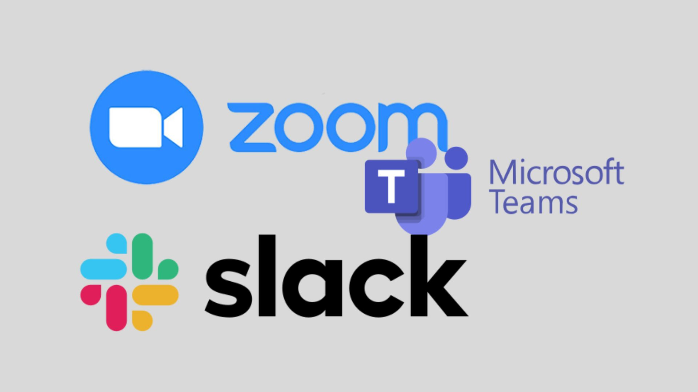
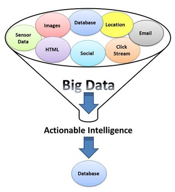

Las tecnologías web han transformado radicalmente el panorama empresarial, influyendo en casi todos los
aspectos de los negocios modernos. A continuación, se detallan algunos de los impactos más significativos:
Comercio Electrónico
Plataformas de E-commerce:
Amazon, eBay y Alibaba:
Estas plataformas han revolucionado la manera en que las personas compran y venden productos. Ofrecen
una gran variedad de productos, precios competitivos y comodidad de compra desde cualquier lugar.
Tiendas en Línea Propias
Herramientas como Shopify y WooCommerce permiten a las pequeñas y medianas empresas crear y gestionar
sus propias tiendas en línea, facilitando la venta directa al consumidor sin intermediarios.
eCommerce más importantes del mundo
En 2025, los cinco principales líderes del comercio electrónico a nivel mundial y sus ingresos anuales son
los
siguientes:
eCommerce
2022
2027
Alibaba
318.000 millones USD
461.000 millones USD
Amazon
301.000 millones USD
519.000 millones USD
JD.com
211.000 millones USD
343.000 millones USD
Pinduoduo
185.000 millones USD
335.000 millones USD
Apple
34.000 millones USD
40.000 millones USD
Globalización del Mercado:
Alcance Global
Las tecnologías web permiten a las empresas acceder a mercados internacionales sin la necesidad de
una presencia física en esos lugares, expandiendo significativamente su base de clientes.
Operaciones 24/7
Las tiendas en línea pueden operar las 24 horas del día, los 7 días de la semana, aumentando las
oportunidades de ventas y mejorando la satisfacción del cliente.
Marketing Digital
Publicidad en Línea:
Google Ads y Facebook Ads
Estas plataformas permiten a las empresas dirigirse a audiencias específicas con anuncios
personalizados, mejorando la efectividad de las campañas publicitarias y optimizando el retorno de
inversión (ROI).
Publicidad Programática
Utiliza algoritmos para comprar espacios publicitarios en tiempo real, asegurando que los anuncios se
muestren a las audiencias más relevantes en el momento adecuado.
SEO y SEM
Optimización para Motores de Búsqueda (SEO)
Mejora la visibilidad de los sitios web en los resultados de búsqueda orgánica, atrayendo tráfico de
calidad y aumentando la probabilidad de conversión.
Marketing en Motores de Búsqueda (SEM)
Involucra la compra de anuncios pagados en motores de búsqueda, proporcionando una forma efectiva de
captar la atención de los usuarios que buscan productos o servicios específicos.
Trabajo y Colaboración Remota
erramientas de Colaboración
Slack, Microsoft Teams y Zoom
Facilitan la comunicación y colaboración entre equipos distribuidos geográficamente, permitiendo
reuniones virtuales, chat en tiempo real y colaboración en documentos en línea.
Gestión de Proyectos
Plataformas como Trello, Asana y Jira ayudan a los equipos a organizar tareas, gestionar proyectos y
mantener el seguimiento del progreso, mejorando la eficiencia y productividad.

Flexibilidad Laboral
Trabajo Remoto
Las tecnologías web permiten a los empleados trabajar desde cualquier lugar, proporcionando
flexibilidad y mejorando la satisfacción laboral.
Atracción y Retención de Talento
Las empresas que ofrecen opciones de trabajo remoto pueden atraer a un talento más amplio y retener
empleados al proporcionar un mejor equilibrio entre trabajo y vida personal.
Transformación Digital
Software como Servicio (SaaS)
Aplicaciones en la Nube
Herramientas como Salesforce, HubSpot y Microsoft 365 proporcionan soluciones de software escalables
y accesibles desde cualquier lugar, facilitando la gestión de relaciones con clientes, marketing y
operaciones internas.
Costos Reducidos
Los modelos SaaS eliminan la necesidad de infraestructura de TI costosa y permiten a las empresas
pagar solo por lo que usan, optimizando los costos operativos.
Big Data y Análisis
Análisis de Datos
Herramientas como Google Analytics, Tableau y Power BI permiten a las empresas recopilar, analizar e
interpretar grandes volúmenes de datos, proporcionando insights valiosos para la toma de decisiones
informadas.

Personalización
El análisis de datos permite a las empresas personalizar experiencias de usuario y ofertas de
productos basadas en comportamientos y preferencias de los clientes.
Servicio al Cliente y Experiencia del Usuario
Chatbots y Asistentes Virtuales
Atención 24/7
Los chatbots pueden proporcionar asistencia al cliente en cualquier momento, respondiendo preguntas
frecuentes y resolviendo problemas comunes de manera eficiente.
Mejora de la Experiencia del Cliente
Los asistentes virtuales, impulsados por inteligencia artificial, pueden ofrecer experiencias
personalizadas y mejorar la satisfacción del cliente
Plataformas de Gestión de Relaciones con Clientes (CRM)
Salesforce y HubSpot
Estas herramientas ayudan a las empresas a gestionar y analizar las interacciones con los clientes,
mejorando las relaciones y aumentando la retención y lealtad del cliente.
Retos y Consideraciones
Ciberseguridad
A medida que las empresas dependen más de las tecnologías web, la protección contra ciberataques y la
protección de datos se vuelven cruciales. Las empresas deben implementar medidas de seguridad
robustas
para proteger la información sensible
Adaptación y Capacitación
La rápida evolución de las tecnologías web requiere que las empresas se adapten continuamente y
capaciten
a sus empleados en nuevas herramientas y métodos.
Ética y Privacidad
Las empresas deben navegar el complejo panorama de la privacidad de los datos y la ética en la
recopilación y uso de información del cliente, asegurando el cumplimiento de regulaciones como el
GDPR y
la CCPA